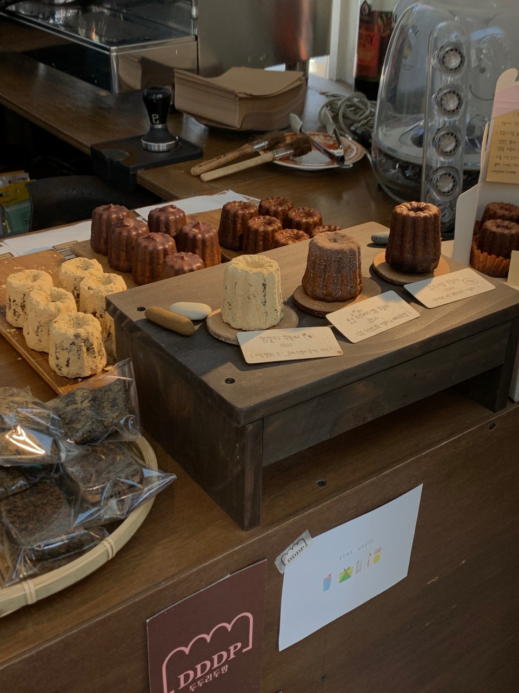

두두리 두팡은 망원역 2번 출구 도보 4분에 있는 카페입니다. 아늑하고 조용한 작은 카페입니다.
영업 시간
매일 12:00-19:00 (월,화,수요일 휴무)
Dahee Pick!

오리지널 뚜눌레 3500원
|V|GF(글루텐 프리)
|V|VG(비건 - 유제품, 계란 등 미함유)
|X|NF(견과류 프리)
no 비건, no 글루텐 프리 까눌레의 맛이 그대로 재현되었습니다!
겉은 아주 바삭하고 속은 촉촉해요!